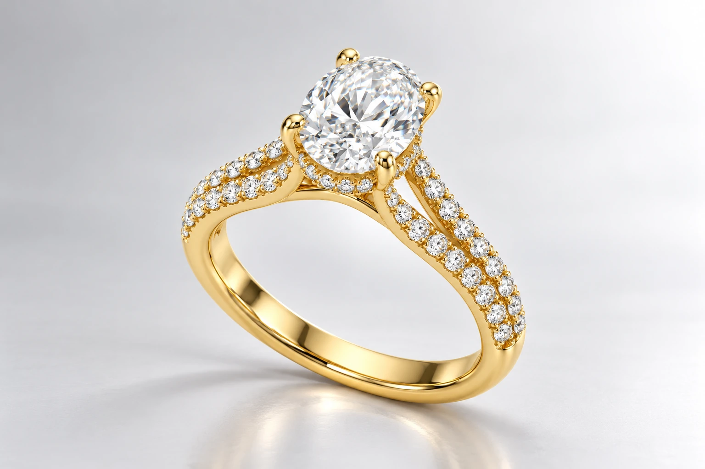
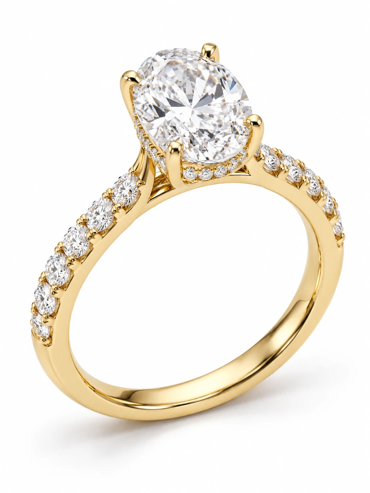
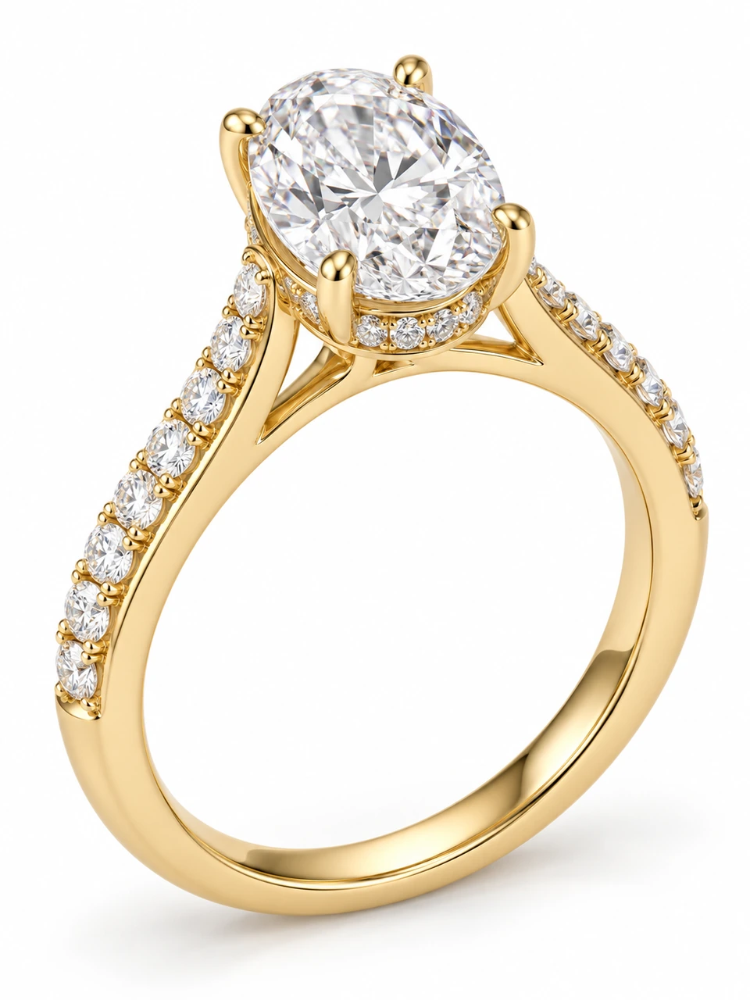
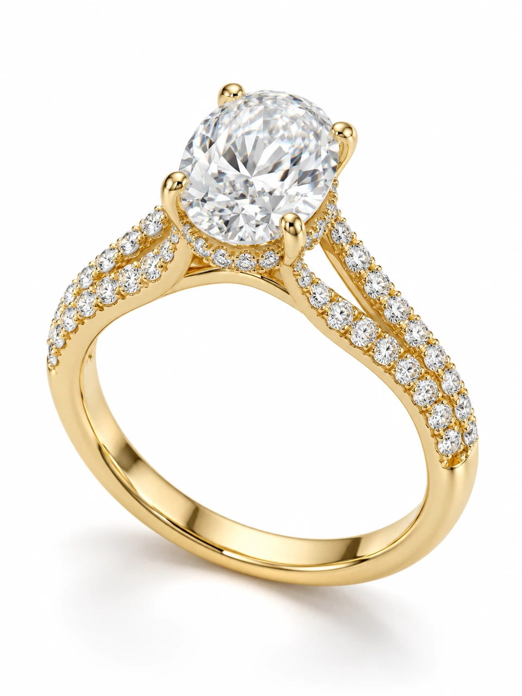
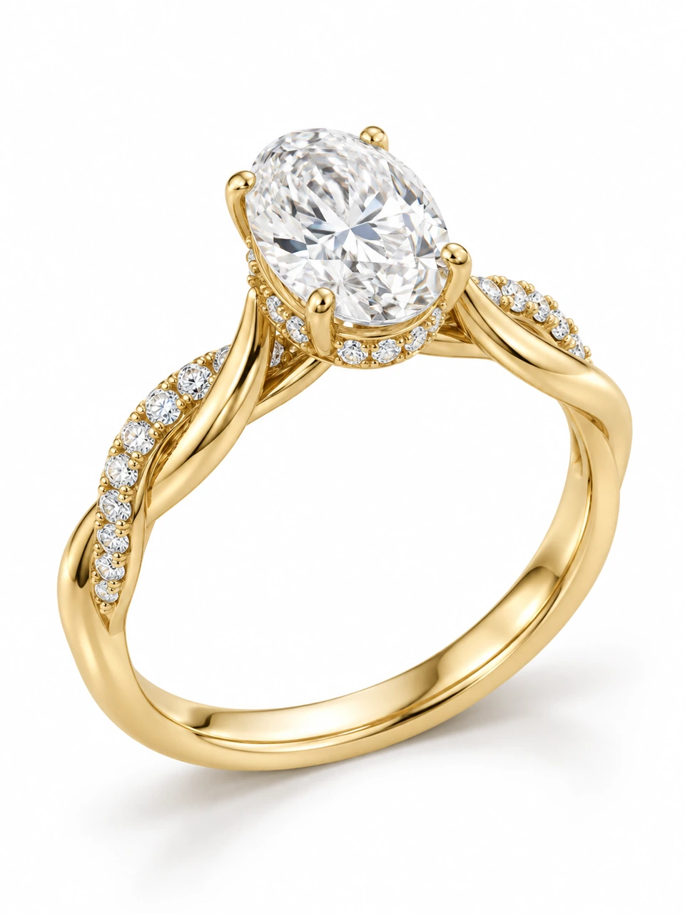
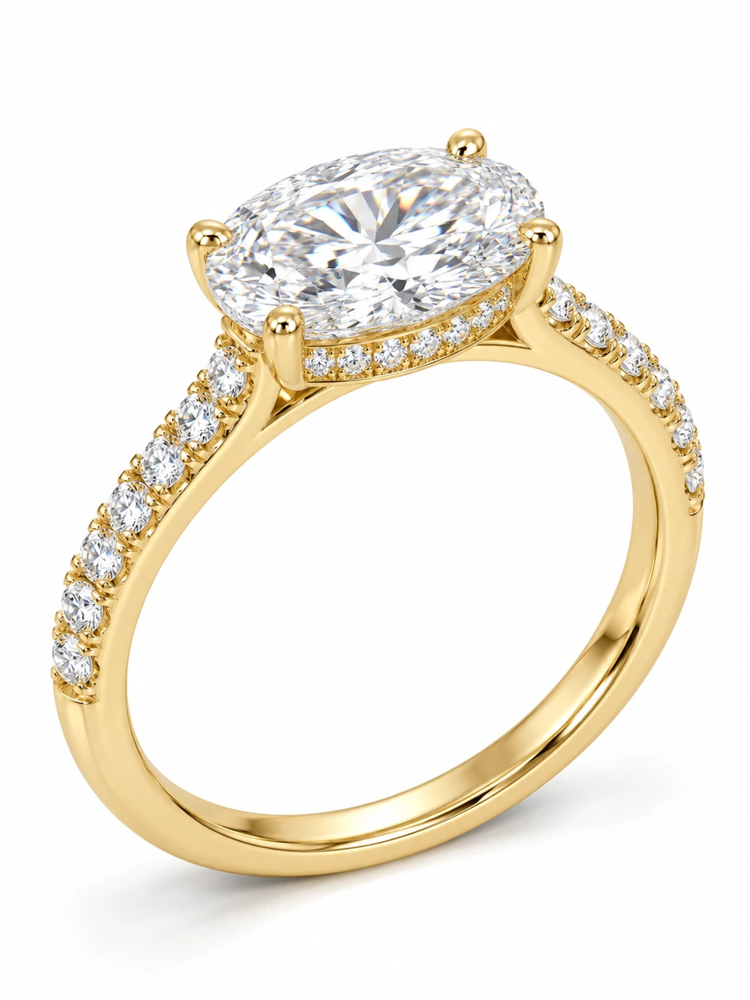

Victoria Diamonds · London Atelier
Halo Ring Collection
A halo revealed from the side. Five oval ring designs pair a hidden diamond gallery with pavé shoulders. Start with a 2 ct Lab-grown centre and 18K yellow gold, using our Essential metal pricing.
Oval hidden halo rings

Aveline Oval Hidden Halo Ring
2 ct Lab centre · 22 round accents
From £1,900 · View & customise

Celina Oval Cathedral Hidden Halo Ring
2 ct Lab centre · 26 round accents
From £1,950 · View & customise

Elowen Oval Split Shank Hidden Halo Ring
2 ct Lab centre · 30 round accents
From £2,000 · View & customise

Iselle Oval Twist Hidden Halo Ring
2 ct Lab centre · 22 round accents
From £1,900 · View & customise

Maelle East West Hidden Halo Ring
2 ct Lab centre · 24 round accents
From £1,925 · View & customise